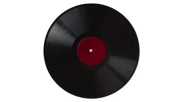
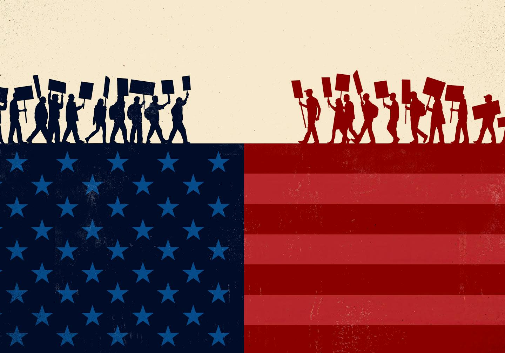

Abhi Mokkapati
Abhi Mokkapati

🎧FEATURED · AUDIO / ML
SoundWave
Analyzes a music library to auto detect drops, builds, breakdowns, and vocal sections, then writes them straight into Rekordbox as hot cues, turning hours of manual cue setting into a few minutes.

📰FULLSTACK / DATA
Political Bias Analyzer
Pulls live political news from GNews, The Guardian, and the NYT Archive, scores each article for sentiment and lean, and serves it through a live dashboard, refreshed on a schedule via GitHub Actions.
SYSTEMS / SECURITY
DropboxClone
An end to end encrypted file storage & sharing service written in Go. Files are encrypted and integrity checked on the client, sharing happens via signed single use invitations, and revoking access rotates keys so revoked users lose read access going forward.
DESKTOP / COMPUTER VISION
Photo Library Manager
A native Windows app that indexes a photo library with face & object recognition, clusters faces into people you name once, and proposes a folder/rename structure it only applies once you approve it.
DATA / ML
F1 Race Predictor
Trains models on historical FastF1 data to predict race winners, podiums, and pole positions, with feature importance breakdowns and a dashboard for visualizing upcoming Grand Prix predictions.
NETWORKING
ScreenCast
Streams a Windows machine's second screen to an iPad over WiFi in real time, built on a lightweight Express + WebSocket server with a virtual display driver.
AI / GAMES
2048 Solver Sidekick
An always on top desktop popup that watches a live 2048 game on screen, runs an expectimax search to find the best move, and shows it to you, or plays the game for you.
PORTFOLIO
Photography Portfolio
A curated collection of shots: landscapes, portraits, and everything I couldn't put down the camera for.